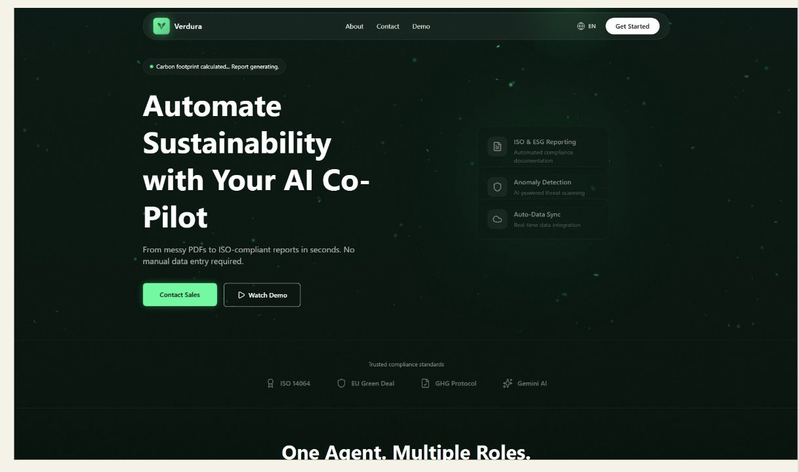
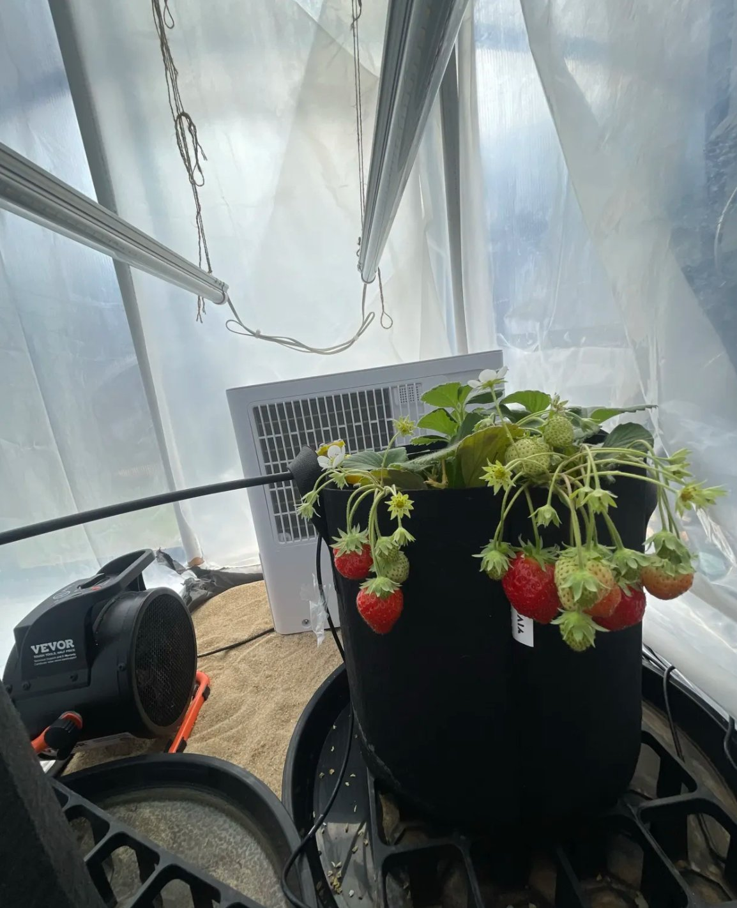
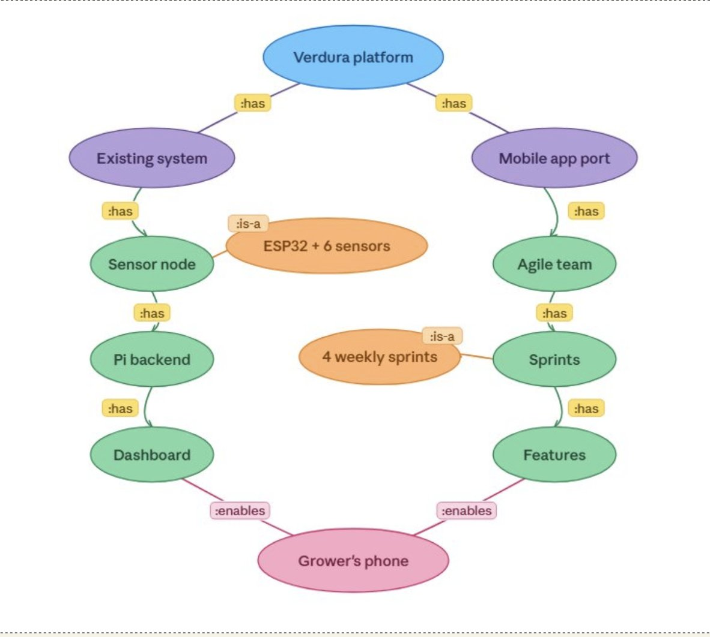
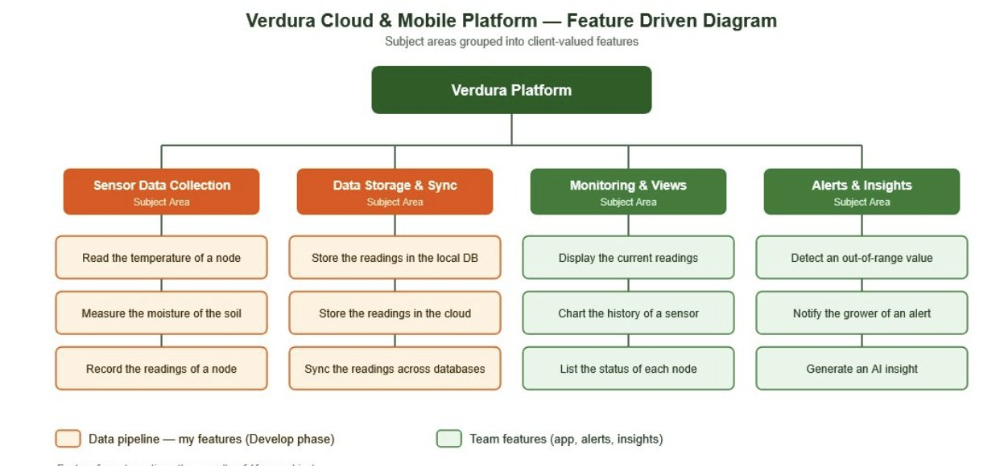
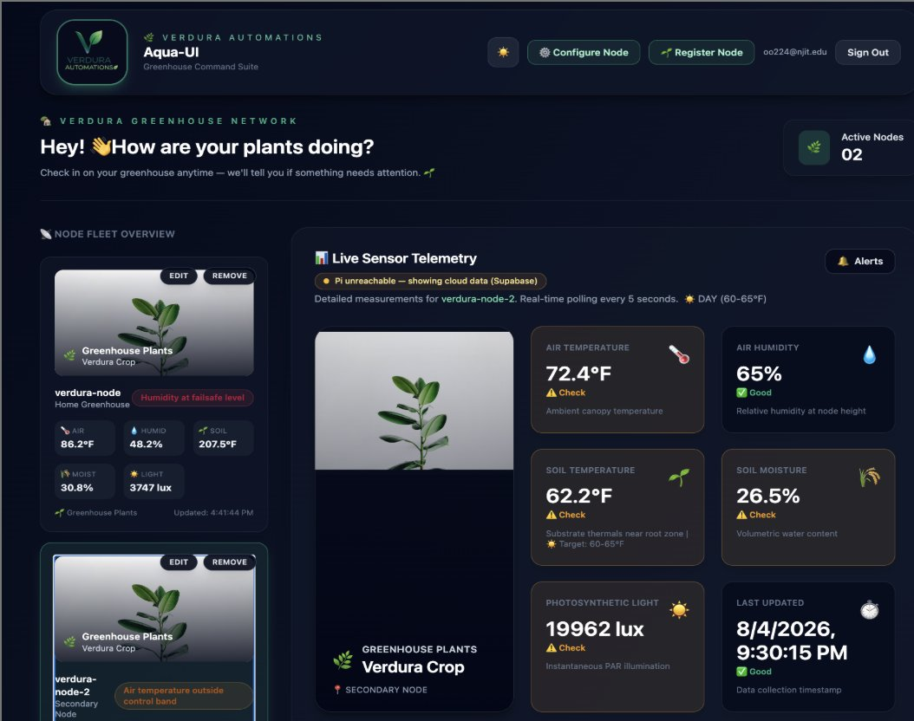
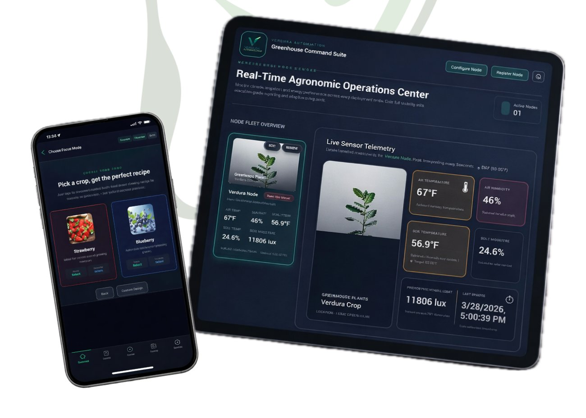

01 / FEATURED PROJECT
VERDURA
SMART GREENHOUSE
1M+Sensor readings
4Analytics timeframes
Multi-nodeSensor monitoring
Led a enhancing Verdura Automations’ AI-powered greenhouse monitoring prototype. I developed for , calculating averages for temperature, humidity, soil moisture, and sunlight across and custom date ranges. Our team also built a and multi-node monitoring features. During development, we used to remotely access the greenhouse’s Raspberry Pi for live readings; this was a development solution, . I developed prediction logic combining live readings and historical trends to anticipate soil-moisture changes and recommend growing actions. We delivered a functioning application for a greenhouse in .






01 / 07